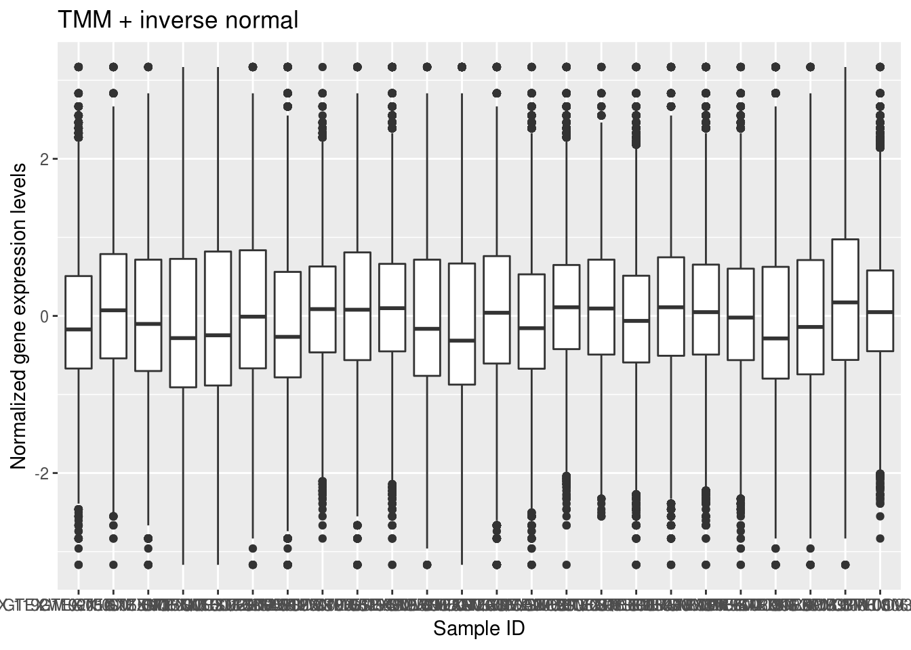
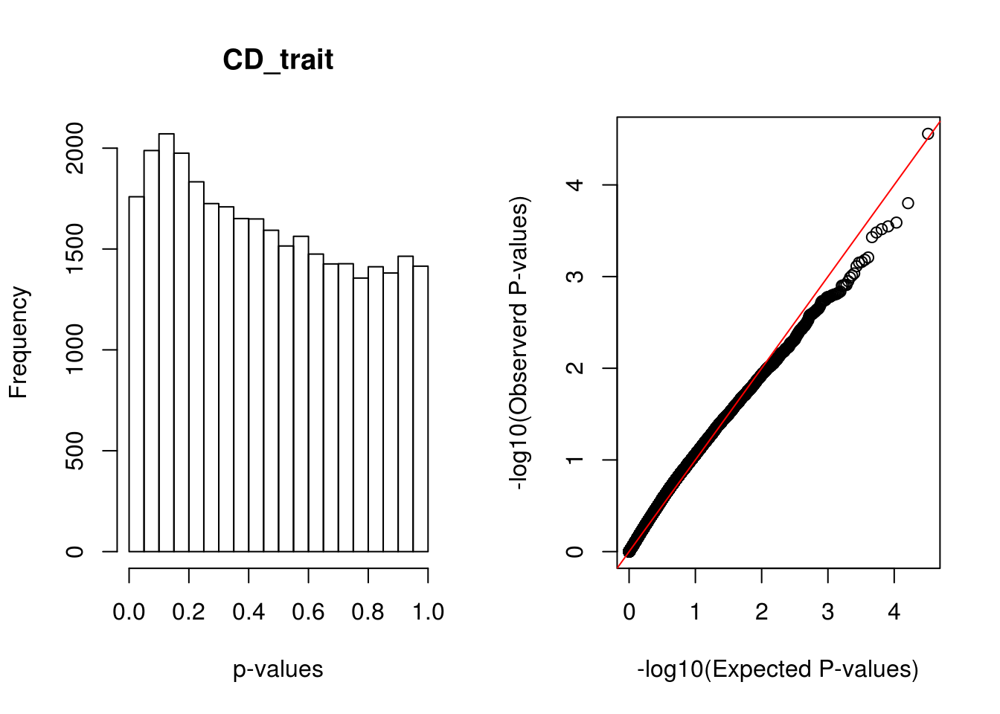

Lassosum_analysis
Jing Gu
2020-02-10
Last updated: 2020-03-24
Checks: 6 1
Knit directory: PRS_project/
This reproducible R Markdown analysis was created with workflowr (version 1.6.0). The Checks tab describes the reproducibility checks that were applied when the results were created. The Past versions tab lists the development history.
Great! Since the R Markdown file has been committed to the Git repository, you know the exact version of the code that produced these results.
Great job! The global environment was empty. Objects defined in the global environment can affect the analysis in your R Markdown file in unknown ways. For reproduciblity it’s best to always run the code in an empty environment.
The command set.seed(20200205) was run prior to running the code in the R Markdown file. Setting a seed ensures that any results that rely on randomness, e.g. subsampling or permutations, are reproducible.
Great job! Recording the operating system, R version, and package versions is critical for reproducibility.
Nice! There were no cached chunks for this analysis, so you can be confident that you successfully produced the results during this run.
Using absolute paths to the files within your workflowr project makes it difficult for you and others to run your code on a different machine. Change the absolute path(s) below to the suggested relative path(s) to make your code more reproducible.
| absolute | relative |
|---|---|
| ~/projects/polygenic_risks/workbooks/PRS_project/output/%s_vs_wb_lm_summary.txt | output/%s_vs_wb_lm_summary.txt |
Great! You are using Git for version control. Tracking code development and connecting the code version to the results is critical for reproducibility. The version displayed above was the version of the Git repository at the time these results were generated.
Note that you need to be careful to ensure that all relevant files for the analysis have been committed to Git prior to generating the results (you can use wflow_publish or wflow_git_commit). workflowr only checks the R Markdown file, but you know if there are other scripts or data files that it depends on. Below is the status of the Git repository when the results were generated:
Ignored files:
Ignored: output/new_results/
Untracked files:
Untracked: analysis/.ipynb_checkpoints/
Untracked: code/.ipynb_checkpoints/
Untracked: code/run_lassosum.R
Untracked: code/untitled.txt
Untracked: code/untitled1.txt
Untracked: data/gwas
Untracked: data/lassosum
Untracked: output/.ipynb_checkpoints/
Untracked: output/PRS_barplot.png
Untracked: output/PRSice_scatter_plot.png
Untracked: output/compare_tools.png
Untracked: output/lassosum_parameters.png
Note that any generated files, e.g. HTML, png, CSS, etc., are not included in this status report because it is ok for generated content to have uncommitted changes.
These are the previous versions of the R Markdown and HTML files. If you’ve configured a remote Git repository (see ?wflow_git_remote), click on the hyperlinks in the table below to view them.
| File | Version | Author | Date | Message |
|---|---|---|---|---|
| Rmd | 0f40724 | Jing Gu | 2020-03-24 | add PRSice results |
| html | db9e0c2 | Jing Gu | 2020-03-23 | Build site. |
| Rmd | 3aa832a | Jing Gu | 2020-03-23 | run lassosum on blood-related traits |
| Rmd | d2b63a6 | Jing Gu | 2020-03-13 | wflow_git_commit(all = TRUE) |
| html | d2b63a6 | Jing Gu | 2020-03-13 | wflow_git_commit(all = TRUE) |
| html | 8a24ca7 | Jing Gu | 2020-02-28 | new |
| Rmd | 530f11f | Jing Gu | 2020-02-28 | new |
| html | 373320f | Jing Gu | 2020-02-10 | Build site. |
| Rmd | 5ab7e3b | Jing Gu | 2020-02-10 | wflow_publish(“analysis/*“) |
Construct PGS for GTEx genotypes using Lassosum
- Base dataset:
- GIANT height 2014 (summary statistics)
- CAD_2017: hg19
- Target datset:
- GTEx whole blood
Overview of methods:
- PGS constructed using summary statistics and a reference panel under a penalized regression framework (LASSO)
- A general method for choosing tuning parameters without validation data
- Comparable prediction accuracy to the dataset with phenotype available
- Faster and more accurate than LDpred
QC steps
- base dataset
- remove ambiguous SNPs (15%)
- identify and remove duplicated SNPs (0%)
target dataset
- WTCCC
- Human Genome Reference Assembly 17 (NCBI build 35)
- Lift over to hg19
- GTEx Filtering Steps based on
- filter snps by maf >= 0.05, hwe <1e-6, genotype missing >= 0.01
- filter inidividuals with >= 0.01 genotype missingness (5 excluded)
- remove highly correlated SNPs
- remove individuals with high or low heterzygosity rates (16 excluded)
- For the remaining samples, only 654 of them have genotype information for whole blood tissue.
Gene expression Quantification
- Reads quantification read counts and TPM values were produced with RNA-SeQC v1.1.9*
- Normalization (56200 genes -> 32387 genes)
- Trimmed mean of M-values (TMM) between each pair of samples {https://genomebiology.biomedcentral.com/articles/10.1186/gb-2010-11-3-r25}
- address the problem of a few genes expressed way more higher in one sample than the rest. Other genes may seem to be downregulated compared with spurious expression of a small number of genes
- compute a set of scaling factors for the library sizes that minimize the log-fold changes between the pair of samples for most genes.
- Filtered genes by gene expression >= 0.1 in at least 20% of samples
- Expression values of each gene inversely normal transformed across samples
- rank-based INT
- convert to ranks, then transform to quantiles
- sample from inverse normal distributions
- Trimmed mean of M-values (TMM) between each pair of samples {https://genomebiology.biomedcentral.com/articles/10.1186/gb-2010-11-3-r25}
- Plots for Normalization
No id variables; using all as measure variables
- Check distributinos for specific genes’s transcripts levels

| Version | Author | Date |
|---|---|---|
| db9e0c2 | Jing Gu | 2020-03-23 |

| Version | Author | Date |
|---|---|---|
| db9e0c2 | Jing Gu | 2020-03-23 |
- Try log2 transformation

| Version | Author | Date |
|---|---|---|
| db9e0c2 | Jing Gu | 2020-03-23 |

| Version | Author | Date |
|---|---|---|
| db9e0c2 | Jing Gu | 2020-03-23 |
- Covariates:
- first five genotype PCs as covariates, which capture the major population structure among GTEx donors.
- WGS sequencing platform and library protocol
- donor sex, age, ethnicity
### Results
- Evaluate the performance of lassosum and PRSice-2 on WTCCC dataset


- Results from GTEx 
| Version | Author | Date |
|---|---|---|
| db9e0c2 | Jing Gu | 2020-03-23 |
[1] "The number of significant associations for the trait after FDR correction is 0"[1] "The number of significant associations for the trait after FDR correction is 0"[1] "The number of significant associations for the trait after FDR correction is 0"Gene AC080125.1 has the strongest association with CD trait
sessionInfo()R version 3.5.1 (2018-07-02)
Platform: x86_64-pc-linux-gnu (64-bit)
Running under: Scientific Linux 7.4 (Nitrogen)
Matrix products: default
BLAS/LAPACK: /software/openblas-0.2.19-el7-x86_64/lib/libopenblas_haswellp-r0.2.19.so
locale:
[1] LC_CTYPE=en_US.UTF-8 LC_NUMERIC=C
[3] LC_TIME=en_US.UTF-8 LC_COLLATE=en_US.UTF-8
[5] LC_MONETARY=en_US.UTF-8 LC_MESSAGES=en_US.UTF-8
[7] LC_PAPER=en_US.UTF-8 LC_NAME=C
[9] LC_ADDRESS=C LC_TELEPHONE=C
[11] LC_MEASUREMENT=en_US.UTF-8 LC_IDENTIFICATION=C
attached base packages:
[1] stats graphics grDevices utils datasets methods base
other attached packages:
[1] reshape2_1.4.3 ggplot2_3.1.1
loaded via a namespace (and not attached):
[1] Rcpp_1.0.2 compiler_3.5.1 pillar_1.3.1 later_0.7.5
[5] git2r_0.26.1 highr_0.7 plyr_1.8.4 workflowr_1.6.0
[9] tools_3.5.1 digest_0.6.18 evaluate_0.12 tibble_2.1.1
[13] gtable_0.2.0 pkgconfig_2.0.2 rlang_0.4.0 yaml_2.2.0
[17] withr_2.1.2 stringr_1.3.1 dplyr_0.8.0.1 knitr_1.20
[21] fs_1.3.1 rprojroot_1.3-2 grid_3.5.1 tidyselect_0.2.5
[25] glue_1.3.0 R6_2.3.0 rmarkdown_1.10 purrr_0.3.2
[29] magrittr_1.5 whisker_0.3-2 backports_1.1.2 scales_1.0.0
[33] promises_1.0.1 htmltools_0.3.6 assertthat_0.2.0 colorspace_1.3-2
[37] httpuv_1.4.5 labeling_0.3 stringi_1.2.4 lazyeval_0.2.1
[41] munsell_0.5.0 crayon_1.3.4